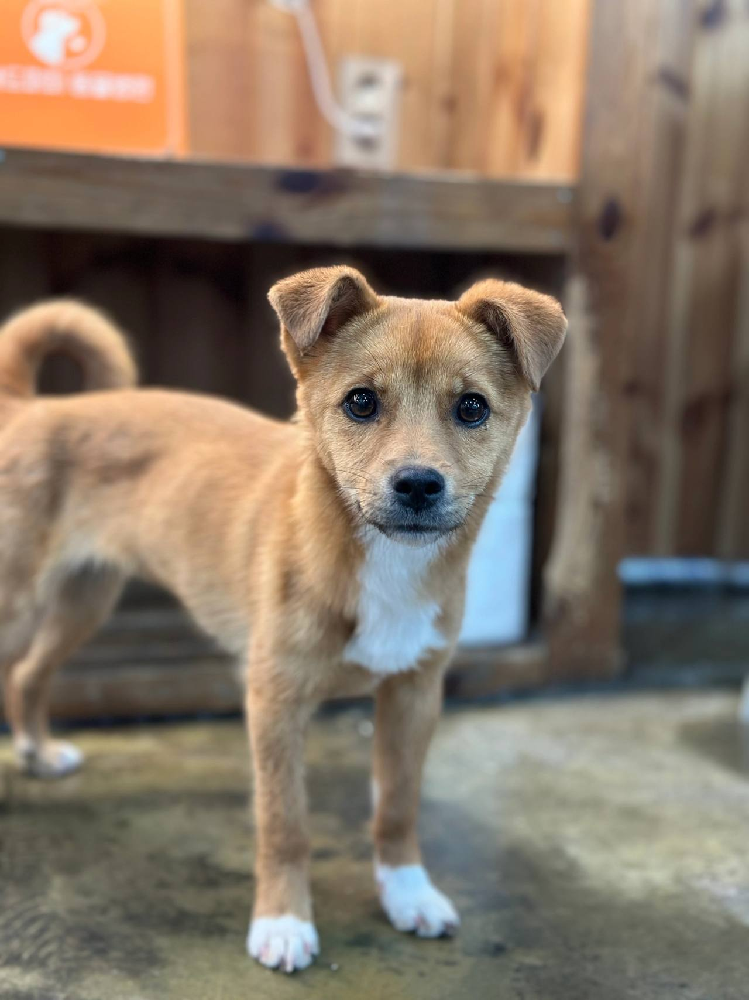
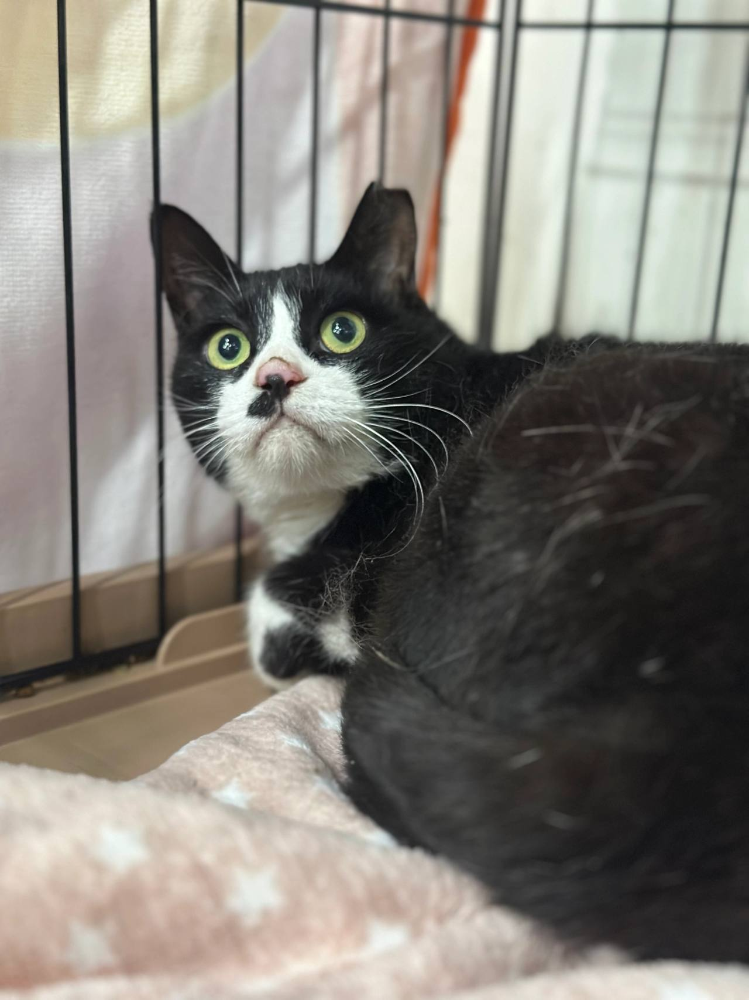
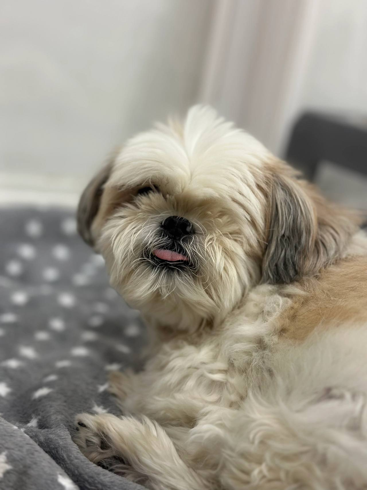
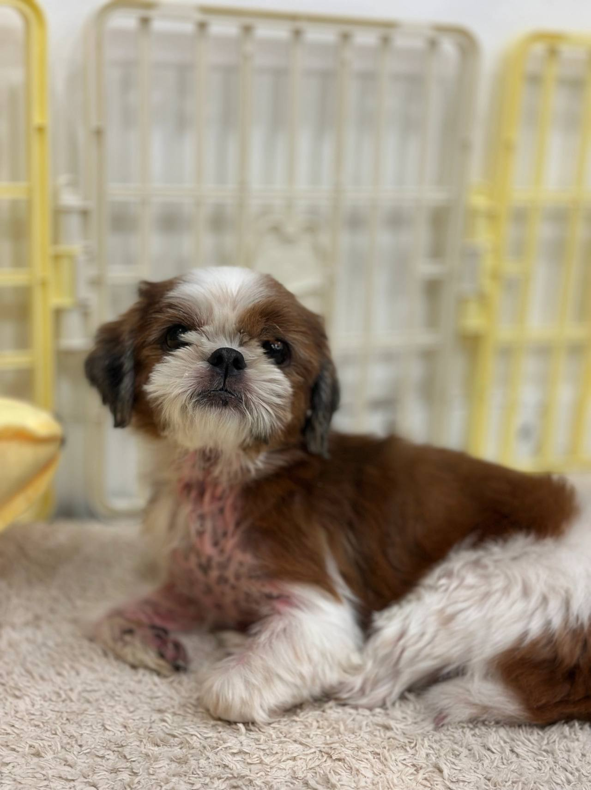

임신, 출산
출산 전후로돌보기 어렵거나아기와 함께 두기불안할 때
LOCAL GUIDE
돌봄을 지속하기 어려운 사정이 생겼을 때 무책임한 방치 대신 종로구고양이파양 선택지를 고민하는 것은 마지막 책임감의 표현일 수 있습니다. 해당 시설이 체계적인 관리 일과를 유지하는지 살펴보는 과정이 매우 중요합니다. 수용 정원이 모두 차서 자리가 없는 경우에는 즉시 보호가 어려우므로 유선상 조율이 선행되어야 합니다.
REHOMING
개인적인 사정으로 반려견과 더 이상 함께하기 어려운 상황일 때 체계적인 절차를 거쳐 아이를 입소시키고 무료 분양으로 보금자리를 이어 줍니다. 전화 상담(0505-707-0401)을 통해 현재 상황을 파악하며 무리한 수용 대신 여건에 맞춰 신중하게 돌봄을 시작합니다.
갑작스러운 환경 변화 속에서도 아이가 평온함을 잃지 않도록 세심하게 보살피며 다음 행보를 준비합니다. 이는 책임 있는 보호 속에서 아이에게 새로운 가족을 만날 기회를 열어 주는 과정입니다.
새로운 가족을 찾아 주는 일은아이에게 건넬 수 있는마지막 선물입니다.
출산 전후로돌보기 어렵거나아기와 함께 두기불안할 때

함께 살다동물 알러지가 나타나생활이 어려워졌을 때

해외로 데려갈 수 없거나이사한 집에서함께하기 어려울 때군 입대와 오랜 부재도같은 경우에 가깝습니다.

보호자가 아프거나연로해졌을 때아이도 나이가 들어집에서 돌보기 어려울 때
상담부터 입양 공고까지, 순서는 같습니다.

유선 상담을 통해 나이, 지역, 질병 유무와 특이 상황을 확인합니다. 센터 내부 공간을 종합적으로 살펴본 뒤 1차 입소 가능 여부를 결정합니다.

직접 센터로 방문하시거나 이동 지원 일정을 조율하여 선택합니다. 전국 어디든 전담 인력이 무상으로 픽업하여 이동을 돕습니다.

제반 확인 사항과 규정된 비용 조항을 면밀하게 검토합니다. 안내 내용을 충분히 숙지한 후 정식 입소 동의서를 작성합니다.

건강 상태와 함께 대형견, 소형견, 노령견 여부를 다각도로 살핍니다. 확인된 상태에 맞춰 아이가 안전하게 머물 전용 공간을 정합니다.

안정적인 생활 속에서 아이의 사진과 영상을 정성껏 촬영합니다. 새로운 인연을 맞이할 수 있도록 사전 자료를 차분히 정리합니다.

공식적인 입양 공고를 등록하여 아이의 다음 여정을 이끕니다. 적합한 보금자리를 찾아 새로운 가족과 따뜻하게 연결됩니다.
개별 일과와 성향 점검을 거쳐 생활 적응을 준비하고 있는 강아지 현황입니다.
양육 환경과 반려견의 성향이 부합하는지 점검하는 순서입니다.
주거 형태, 가족 구성원의 동의 여부, 돌봄 시간 등을 유선 상담을 통해 점검합니다.
보호소에 방문하여 개체의 건강 이력과 행동 특성을 확인하고 직접 대면 시간을 가집니다.
지속 양육에 관한 세부 항목을 확인하고 확인 서류를 작성한 뒤 가정을 이룹니다.
산책하고, 밥 먹고, 미용하는 보호소의 하루입니다. 사진을 누르면 그 이야기를 볼 수 있어요.
안내
직장 이전이나 가구 분리로 인해 종로구 거주민께서 아이의 안전한 보호 처소를 수소문하시는 경우가 있습니다.
신속한 상담을 희망하시는 경우 0505-707-0401 번호로 연락하시면 종로구고양이파양 관련 기본 요건과 준비 절차를 확인하실 수 있습니다. 시설 내 개별 보호 공간이 마감된 경우에는 접수를 받지 않으므로 방문 일정을 잡기 전 전화 문의가 기본입니다. 전화 통화로 대략적인 아이의 이력을 파악한 뒤 방문 면담 일정을 확정하게 됩니다.
약정된 일정에 맞춰 보호자가 시설을 직접 방문하여 생활 환경을 확인하고 인계 계약서를 작성하는 대면 절차가 기본입니다. 아이가 머무를 공간의 채광, 환기, 온도 조절, 위생 상태를 직접 확인하시면 안도감을 얻으실 수 있습니다.
개인 사정으로 내방이 불가능할 경우에는 전문 픽업 기사가 자택으로 방문하여 안전하게 이동을 대행합니다. 종로구고양이파양 서비스는 이동 중 발생할 수 있는 멀미나 불안을 최소화할 수 있도록 특수 안전 장비를 완비하고 진행됩니다.
지방에 홀로 계시던 고령의 보호자가 건강 악화로 쓰러지며 반려견을 직접 데려오지 못해 막막했던 사례가 있었습니다. 이러한 위급 상황에서 안전 케이지와 전문 운송 인력을 갖춘 전용 픽업 서비스가 큰 힘이 되었습니다.
훈련된 이송 기사가 직접 방문하여 아이의 상태를 살피고 이동 중 물과 휴식을 제공하며 시설까지 무사히 데려왔습니다. 종로구고양이파양 서비스는 장거리 이동이 어렵거나 직접 운전이 불가능한 보호자들을 위한 안전한 징검다리를 놓아 드립니다.
입질이나 심한 헛짖음, 극심한 분리불안을 숨기고 입소시키는 경우 오히려 시설 내 생활에서 큰 위험을 초래할 수 있습니다. 사실대로 행동 양상을 알려주셔야 그에 맞춤화된 전문 훈련사의 중재와 관리 계획을 수립할 수 있습니다.
이러한 행동 이력을 바탕으로 해당 특성을 충분히 이해하고 교정 의지가 있는 경험 많은 입양 희망자를 탐색하게 됩니다. 종로구고양이파양 접수 시 아이의 사소한 습관 하나까지 가감 없이 진솔하게 털어놓아 주시는 것이 무엇보다 중요합니다.
파양을 결정하기 전, 현재 닥친 어려움이 일시적인 것인지 장기적으로 극복 불가능한 문제인지 면밀히 검토해야 합니다. 이사로 인한 반려동물 금지 주거지 이전, 심각한 알러지 발현, 급작스러운 중병, 해외 이주 등은 현실적으로 지속 양육을 가로막는 대표적 요인입니다.
방치나 유기라는 비극으로 치닫기 전에 현 상황을 솔직하게 마주하고 대안을 찾는 용기가 필요합니다. 종로구 종로구고양이파양 안내는 보호자의 위기 상황을 공감하며 아이를 안전하게 보호할 수 있는 실질적인 방안을 제시합니다.
가족처럼 함께하던 고양이와의 생활을 정리해야 하는 순간은 누구에게나 감당하기 힘든 무게로 다가옵니다. 보호자의 갑작스러운 건강 악화나 질병, 예상치 못한 이사나 해외 이민, 출산으로 인한 가족 구성원의 심각한 알러지, 군입대 등 생의 예측할 수 없는 변화는 때로 깊은 고민을 낳습니다.
끝까지 곁을 지키지 못한다는 자책감에 홀로 괴로워하다가 잘못된 길을 선택하기보다, 다음 보금자리를 마련해 주는 것이 반려인으로서 다해야 할 마지막 책무입니다. 종로구 종로구고양이파양 상담을 찾는 분들의 공통된 바람은 우리 아이가 안전한 울타리 안에서 보살핌을 받으며 새로운 가정을 만나는 일입니다.
입소 당일 차질 없는 행정 처리를 위해 보호자는 정해진 필수 서류를 사전에 구비해 주셔야 합니다. 마이크로칩 번호가 기재된 동물등록증, 동물병원 접종 및 중성화 확인서가 대표적인 지참 항목입니다.
새로운 환경에서 느낄 두려움을 덜어주기 위해 보호자의 냄새가 밴 담요, 즐겨 쓰던 방석과 장난감을 챙겨주시는 것이 좋습니다. 종로구고양이파양 과정에서 이러한 준비는 아이가 낯선 장소에 빠르게 안착할 수 있는 든든한 버팀목이 됩니다.
비용 부담을 덜고자 지인에게 보내거나 온라인 커뮤니티에 글을 올려 무료로 양도했다가, 아이가 다시 버려지거나 열악한 환경에 방치된 채 발견되는 사례가 빈번합니다. 개인 간 거래는 상대방의 경제력이나 돌봄 의지를 공식적으로 확인할 방법이 전무하기 때문입니다.
반면 전문 기관은 법적 계약을 체결하고 엄격한 입양 심사 규정을 적용하여 신원이 확실한 가정만을 선별합니다. 종로구고양이파양 절차를 통해 인계된 개체는 체계적인 신원 보증과 환경 검증을 거친 후 비로소 새 보금자리로 향하게 됩니다.
모든 고양이은 나이, 건강 상태, 접종 유무, 질병 이력, 행동 특성이 저마다 다르기 때문에 일괄적인 금액을 책정할 수 없습니다. 어린 개체와 노령견, 기초 접종이 완료된 개체와 치료가 필요한 개체의 관리 소요는 완전히 다릅니다.
시설에 머무는 기간 동안 들어가는 사료, 위생 케어, 필요 시 투약 및 교정 훈련 비용이 종합적으로 반영됩니다. 따라서 종로구고양이파양 비용은 전화(0505-707-0401) 상담을 통해 아이의 세부 프로필을 면밀히 검토한 후 정직하게 산정되어 안내됩니다.
기질 및 생활 습관 비대면 사전 평가
공격성, 분리불안, 짖음, 입질 여부 및 기존 배변 방식을 가감 없이 파악하여 보호 적합성을 평가합니다.
개별 공간 격리 배정 및 적응 관리
지정된 개별실로 입소하여 초기 스트레스 완화를 위한 안정 기간을 거치며 맞춤 식단을 급여합니다.
전국 대표 번호를 통한 1차 비대면 상담
유선상으로 아이의 품종, 연령, 예방접종 상태, 잔여 공간 여부를 종합적으로 확인하고 입소 가능성을 타진합니다.
종로구고양이파양 상담 전화는 무엇인가요?입소 상담 전화는 0505-707-0401입니다. 종로구이라고 해서 바로 맡길 수 있는 것은 아니고, 자리와 아이 상태를 먼저 확인합니다.
종로구에 따로 적힌 보호소 주소가 있나요?종로구고양이파양 페이지는 종로구 상담 안내입니다. 이 글에 없는 주소를 그 지역 지점이라고 안내하지 않습니다.
전화하면 바로 진행되나요?자리가 없거나 생활이 맞지 않으면 바로 진행되지 않습니다. 전화로 확인한 뒤 만남을 정합니다.
직접 방문이 힘든 경우 자택 픽업 서비스 신청이 되나요?안전한 운송을 위한 전용 이동 차량 지원이 가능한지 여부와 이동 반경에 따른 세부 일정은 유선 상담 시 별도로 협의해야 합니다.
입소 절차를 밟으려면 비용은 어떻게 산정되고 안내받나요?아이의 품종, 연령, 만성 질환 유무, 건강 상태 및 교정 필요성에 따라 돌봄 비용이 상이하며 유선 면담을 통해 책정 기준을 투명하게 고지합니다.
외모나 사진만 보고 위탁 및 보호 여부를 판단해도 괜찮은가요?사진만으로는 아이의 기질과 건강 상태를 온전히 파악할 수 없으므로 상세한 생활 기록 인계와 직접 대면 확인이 원칙입니다.
위탁 시 반드시 챙겨가야 하는 구비 서류는 무엇인가요?보호자 신분증 사본, 동물등록증 원본 또는 등록 번호, 최근 동물병원 예방접종 및 진료 기록부가 반드시 필요합니다.






CONTACT
입양과 입소, 전국 어디서든 전화로 상담합니다.
전국 입소문의